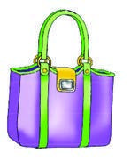
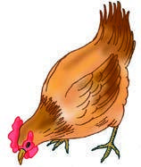
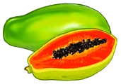

Identify picture 1 by viewing it, exploring a real object, or using a tactile graphic, then write, type, or braille its name.
1.

Circle five words in this table. Then write them in your exercise book. One word is circled as an example.
| d | u | c | k | u | m | g | r | e | d | o | g |
| c | a | t | s | c | b | o | o | k | e | m | o |
| g | o | a | t | f | h | o | t | r | e | e | s |
| p | e | n | c | h | a | i | r | x | p | o | t |
Write the five words you find.
Copy the word Word 1 using the writing lines, keyboard, or braille.
Copy the word Word 2 using the writing lines, keyboard, or braille.
Copy the word Word 3 using the writing lines, keyboard, or braille.
Copy the word Word 4 using the writing lines, keyboard, or braille.
Copy the word Word 5 using the writing lines, keyboard, or braille.
Write the names of the following things in your exercise book.
Identify picture 1 by viewing it, exploring a real object, or using a tactile graphic, then write, type, or braille its name.
1.

Identify picture 2 by viewing it, exploring a real object, or using a tactile graphic, then write, type, or braille its name.
2.

Identify picture 3 by viewing it, exploring a real object, or using a tactile graphic, then write, type, or braille its name.
3.
